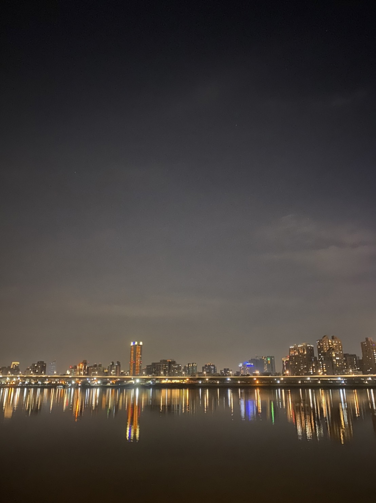
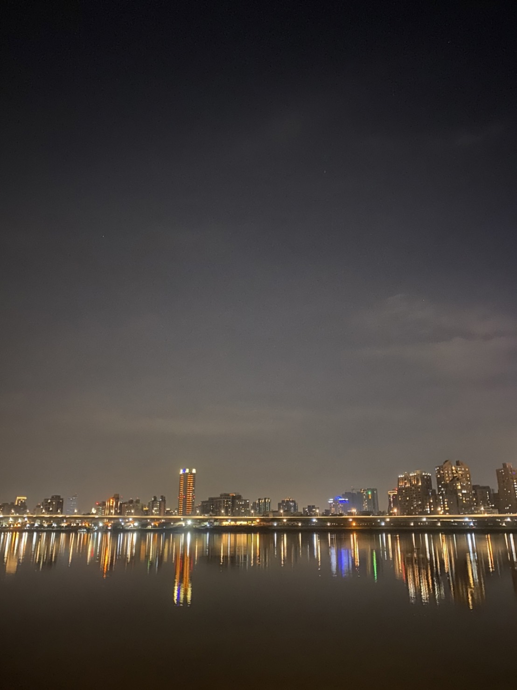

飲食方面，我很喜歡吃甜的或酸的東西，甜點是我人生中最不可缺少的食物，最喜歡的口味必定是巧克力，扎實的巧克力蛋糕是我的最愛，還有Costco的草莓蛋糕、星巴克的檸檬塔都是自己常常買來吃的甜點。除了甜點之外，我也很喜歡喝手搖，偏好奶類、水果類的飲料，但是隨著年紀的增長，了解手搖飲料的壞處後，一個禮拜的量也漸漸減少，也都只喝微糖或無糖，迷克夏的柳丁綠及他的鮮奶類飲品我都挺喜歡的。我喜歡、不排斥的食物不少，但不喜歡吃的卻很多，像是中式料理中最重要的蔥、薑、蒜都不吃，皮蛋、芹菜、茄子、苦瓜及三層肉我都很討厭，完完全全不碰任何一口。還有，我非常喜歡吃水果，最喜歡的水果是橘子和奇異果，基本上只要是水果，除了火龍果以外，我都來者不拒。上述提到的去海邊以及吃甜點，也是我心情不好時紓壓的方式，現在住在台北要看海的機率不高，於是我偶爾會去大稻埕坐坐，那裡的景色也很美麗，還能在那邊喝酒、聊天，晚上去的時候很舒服，一杯酒配上涼快的風，以及台北市的美景，能讓我感到放鬆、愉快。
 甜點

大稻埕
甜點

大稻埕